Many AI voice systems, such as Retell AI and Vocode are built on top of Twilio. While Twilio is an excellent platform for rapid development, building an AI voice business solely on top of it comes with significant risks such as deplatforming and prohibitive costs.
Somleng addresses these risks by offering an open-source alternative, giving businesses the freedom to self-host or work with lower-cost providers. Since Somleng offers full compatibility with the Twilio API, AI-powered voice systems built on Twilio can easily transition to Somleng without requiring significant changes to their existing codebase or architecture. This enables businesses to easily transition to a more customizable and cost-effective open-source alternative, without having to overhaul their existing Twilio-based workflows.
In this post, we'll walk you through the technical journey of integrating AI into Somleng's voice platform—combining key architectural decisions, the challenges we faced and the solutions we developed to overcome them.
Twilio's <Stream> noun,
used within the <Connect> verb, is a set of TwiML™
instructions which enables
real-time streaming of voice data to external systems for AI processing. It allows live audio from a
call to be streamed over WebSockets to AI-driven platforms, where speech recognition, natural language
processing, or machine learning algorithms can analyze the conversation in real time. This makes it
ideal for building voice-powered AI applications like interactive voice response (IVR), real-time
transcription, sentiment analysis, and intelligent customer support bots, enhancing the call experience
with AI capabilities. Most existing AI Voice systems, such as Retell
AI
and Vocode return the following TwiML
instructions to initiate a connection with Twilio.
<?xml version="1.0" encoding="UTF-8"?>
<Response>
<Connect>
<Stream url="wss://example.com/audiostream" />
</Connect>
</Response>
After Twilio parses this TwiML document, it opens a Websockets connection to the AI voice system by
connecting to the
URL
provided in the
url attribute of the <Stream> noun. Audio is Base64 encoded, included
in a
Twilio defined Websocket message
and sent
bi-directionally between Twilio and the AI voice system. Below is an example of a
Media message.
{
"event": "media",
"sequenceNumber": "3",
"media": {
"track": "outbound",
"chunk": "1",
"timestamp": "5",
"payload": "no+JhoaJjpz..."
} ,
"streamSid": "MZXXXXXXXXXXXXXXXXXXXXXXXXXXXXXX"
}Twilio receives websockets messages sent from the AI voice system over the websockets connection and returns audio to the caller, while the AI Voice system receives websockets messages from Twilio to interperate audio from the caller. See below:
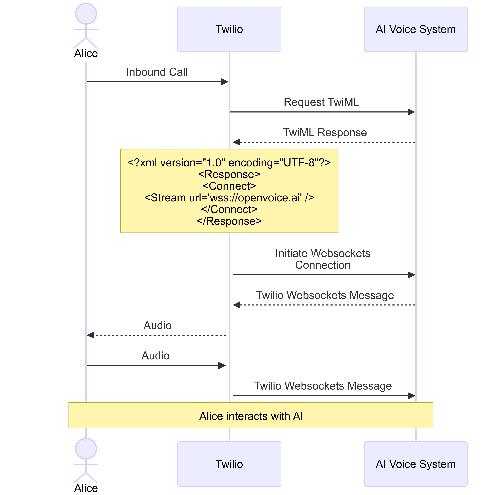
When you make a call to Twilio a bunch of stuff happens behind the scenes which allows developers to programmatically control the call using TwiML™. Twilio encapsulates this logic into a black box. In this section we'll open up the black box and do a bit of a deep dive into how Somleng handles this process. We'll then build on this knowledge to explain how we handle the <Connect> verb.
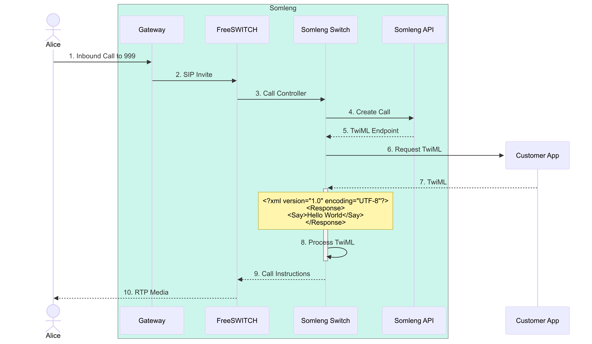The diagram above is a high-level overview of how incoming calls are handled by Somleng explained in more detail below:
<?xml version="1.0" encoding="UTF-8"?>
<Response>
<Say>Hello World<</Say>
</Response>
Now that we have a high-level overview of how Somleng handles incoming calls, let's take a look at introducing the <Connect> verb.
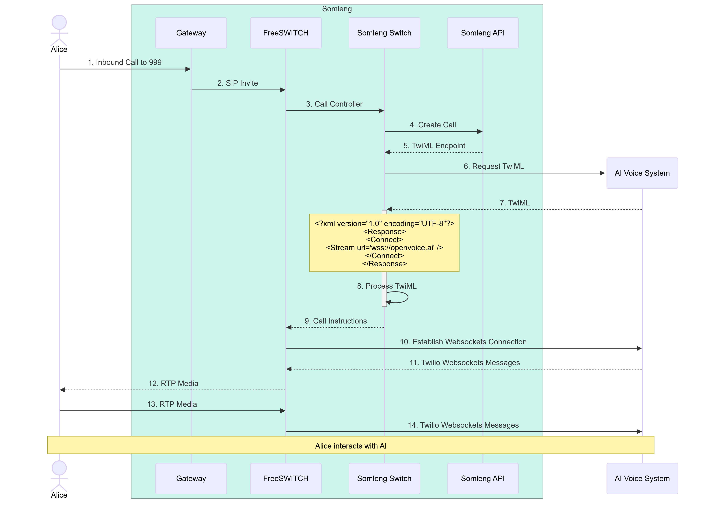The diagram above shows what happens when we introduce the <Connect> verb. Note that steps 1-6 are the same as in the previous section and we have just replaced the Customer App with the AI voice system. Let's explore what happens from step 7 in more detail below:
<?xml version="1.0" encoding="UTF-8"?>
<Response>
<Connect>
<Stream url="wss://openvoice.ai" />
</Connect>
</Response>wss://openvoice.ai
wss://openvoice.ai and sends
the connected message followed by the start message.
{
"event": "connected",
"protocol": "Call",
"version": "1.0.0"
}{
"event": "start",
"sequenceNumber": "1",
"start": {
"accountSid": "ACXXXXXXXXXXXXXXXXXXXXXXXXXXXXXX",
"streamSid": "MZXXXXXXXXXXXXXXXXXXXXXXXXXXXXXX",
"callSid": "CAXXXXXXXXXXXXXXXXXXXXXXXXXXXXXX",
"tracks": [ "inbound" ],
"mediaFormat": {
"encoding": "audio/x-mulaw",
"sampleRate": 8000,
"channels": 1
},
"customParameters": {
"FirstName": "Jane",
"LastName": "Doe",
"RemoteParty": "Bob",
},
},
"streamSid": "MZXXXXXXXXXXXXXXXXXXXXXXXXXXXXXX"
}media messages to the FreeSWITCH task via the Websockets
connection such as:
{
"event": "media",
"sequenceNumber": "3",
"media": {
"track": "outbound",
"chunk": "1",
"timestamp": "5",
"payload": "no+JhoaJjpz..."
},
"streamSid": "MZXXXXXXXXXXXXXXXXXXXXXXXXXXXXXX"
}media message and sends it to the AI
voice
system over the Websockets connection.
{
"event": "media",
"sequenceNumber": "135",
"media": {
"track": "outbound",
"chunk": "1",
"timestamp": "10",
"payload": "no+JhoaJjpz..."
},
"streamSid": "MZXXXXXXXXXXXXXXXXXXXXXXXXXXXXXX"
}In order to handle steps 10 through 14 above we got some help from an engineer at one of our customers Nucleus to write a FreeSWITCH module called mod_twilio_stream. The module was based on the mod_audio_fork by Drachtio, and adds support for Twilio defined Websocket messages. The implementation details of the module is beyond the scope of this article, but the source code is available in the Somleng Switch Github repository.
In order to handle steps 8 and 9 we needed to figure out a way to invoke the new mod_twilio_stream module with the websockets URL after parsing the TwiML received in step 7. Somleng Switch uses Adhearsion which is a Ruby based voice application development framework to handle APIs such as playing audio files, recording calls and handing text-to-speech (TTS). Under the hood, Adhearsion uses mod_rayo to invoke commands on FreeSWITCH. Digging through the mod_rayo source code, we found an API for executing arbitrary API commands on FreeSWITCH. We can then make use of this API allows us to invoke mod_twilio_stream with the required dynamic arguments such as the websockets URL. The actual implementation details of this is beyond the scope of this article, but the source code is available in the Somleng Switch Github repository.
The <Connect> verb specification states that:
"To start a bidirectional Media Stream, use <Connect> <Stream>. These TwiML instructions block subsequent TwiML instructions unless the WebSocket connection is disconnected."Therefore, we need to add code in order to handle events coming from mod_twilio_stream such as stream disconnect events.
FreeSWITCH event logger
is a sidecar container written in Go that
runs alongside
Somleng Switch and FreeSWITCH. Its main task is to log
FreeSWITCH heartbeat events which is used to auto-scale FreeSWITCH
tasks based on
the
Session-Count attribute.
We can also use it to parse custom events from mod_twilio_stream and publish them to a Redis channel for the audio stream. Somleng Switch subscribes to this channel in order to handle the events.
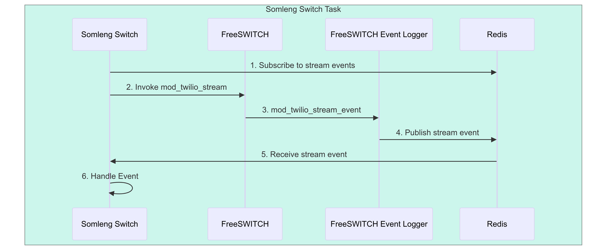The diagram above shows how events are handled.
In order to modify an in-progress call which is connected to the AI, we had to implement our own version of Twilio's Update a Call resource API. This API allows you to modify and in-progress call by providing a new set of TwiML instructions or a new URL providing TwiML instructions for the call.
In order to implement this feature we also make use of Redis pub/sub to publish call update events. More details about the implementation can be found in the Somleng Switch Github repository.
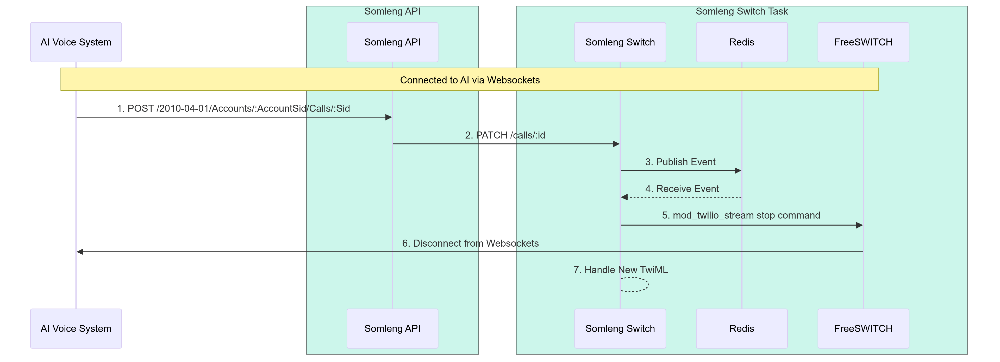The diagram above shows how live call updates are handled.
{
"event": "stop",
"sequenceNumber": "5",
"stop": {
"accountSid": "ACXXXXXXXXXXXXXXXXXXXXXXXXXXXXXX",
"callSid": "CAXXXXXXXXXXXXXXXXXXXXXXXXXXXXXX"
},
"streamSid": "MZXXXXXXXXXXXXXXXXXXXXXXXXXXXXXX"
}In order to test the complete setup we wrote some integration tests with SIPp and docker compose. These tests are run as part of the Somleng Switch integration suite on Github Actions.
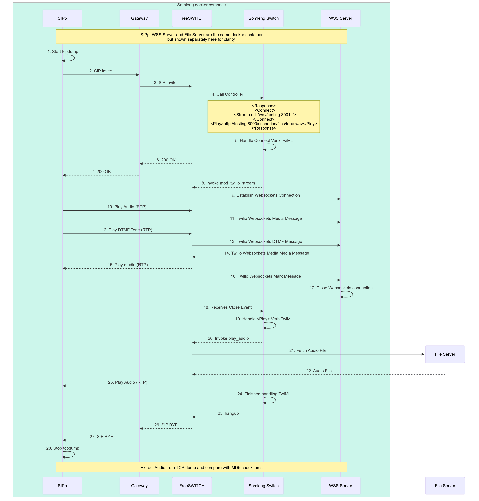The sequence diagram below above shows how this integration test works and is explained in more detail below. Note that SIPp, WSS Server and File Server are all running on the one docker container in the docker compose file, but are shown separately in the diagram for clarity.
<?xml version="1.0" encoding="UTF-8"?>
<Response>
<Connect>
<Stream url="ws://testing:3001" />
</Connect>
<Play>http://testing:8000/scenarios/files/tone.wav</Play>
</Response>After we have captured the a trace with tcpdump we extract the audio using tshark and ffmpeg. We then compare the MD5 checksum of the audio received by the Websockets server as well as the audio received by the SIPp UAC from the <Play> verb and compare it with the MD5 checksum of the audio files. If the checksums match then the test passes, otherwise it fails.
This is a technical post about how we dynamically scale our infrastructure at Somleng.
Somleng is an Open Source Communications-Platform-as-a-Service (CPaaS) and Telco-as-a-Service (TaaS). On the CPaaS side, Somleng includes an Open Source implementation of Twilio's APIs for Programmable Voice and Messaging as well as a Dashboard for customers to configure their account, manage their credentials, configure phone numbers, manage Text-to-Speech (TTS) etc. Somleng supports TwiML for programming voice and messaging flows.
On the TaaS side, Somleng includes a Dashboard and API for companies (aka Carriers) who want to provide their own branded Twilio-like service to their customers. Companies can create and manage accounts, SIP trunks, SMS gateways, manage customer billing etc.
Somleng is being used in a variety of different use-cases around the world. For example it powers telehealth services in Zambia and Guatemala and the National Early Warning Systems of Cambodia and Laos.
When considering the use-case for powering Early Warning Systems, an interesting problem arises. Most of the time the system is relatively idle, supporting only a few registration calls per minute. However in the case of an emergency, the system needs to be able to handle thousands of calls per minute.
We don't want to run over-provisioned servers all of the time because this will make the cost prohibitively expensive, but we need to be able to dynamically handle high loads.
The Somleng Dashboard and API is powered by a Ruby on Rails application connected to a managed PostgreSQL database which manages all of the business logic. This part of the application is relatively easy to auto-scale by placing the application behind a layer 7 managed load balancer such as AWS' Application Load Balancer.
The load balancer routes requests to ECS tasks which are running an Nginx reverse proxy and a copy of the Rails application. Cloudwatch alarms are configured to auto-scale the number of tasks based on CPU usage. When a new task is in service, ECS will register the new task with the load balancer and start routing requests to it. Conversely when the CPU utilization drops below a certain threshold a task is deregistered from the load balancer and terminated thereby saving cost. This is a relatively standard setup common for most web applications.
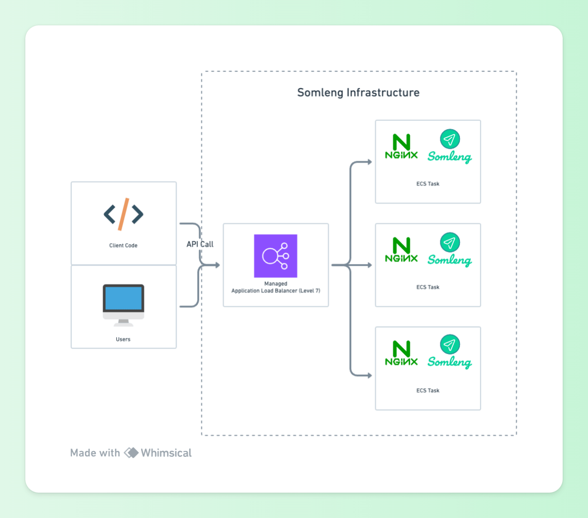 Figure 1: Somleng Dashboard and APIIn order to power programmable voice applications, we need to leave the application layer (layer 7) behind and drop down to the transport layer (level 4). There are a couple of Open Source communication technology platforms in the VoIP domain such as Asterisk and FreeSWITCH. At Somleng we use FreeSWITCH which acts as either a SIP user agent client (UAC) and SIP user agent server (UAS) depending on whether it is initiating a voice call or receiving a voice call.
When acting as a UAC, FreeSWITCH can also be placed behind an Application Load Balancer and placed in a private subnet behind a NAT Gateway as shown below:
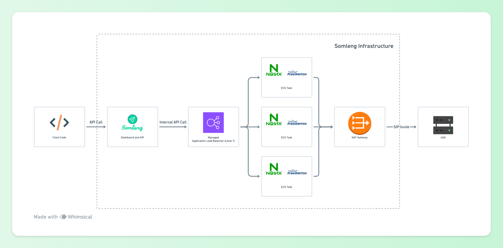 Figure 2: Somleng UAC InfrastructureInternal API requests are received from Somleng via an Application Load Balancer to Nginx Reverse Proxies running alongside FreeSWITCH instances. This architecture allows FreeSWITCH to be auto-scaled up and down based on CPU utilization and/or session count without having to introduce any SIP aware load balancers.
There is one problem about this approach though which has to do with SIP and NAT. To understand this problem we need to understand a little bit more about the Session Initiation Protocol (SIP) and the Session Description Protocol (SDP).
In a SIP invite request, the UAC will insert a SIP Via header indicating the path taken by the request so far which helps in routing the responses back along the same path. Here's an example of a SIP Via Header:
Via: SIP/2.0/UDP 10.10.1.21;branch=z9hG4bKv5jFZ8am7aZQc
In the example above, the responses will be sent back to 10.10.1.21 at the default port
for
UDP 5060.
Here you can see a problem immediately with our infrastructure above. 10.10.1.21 is the IP address of the FreeSWITCH ECS task and is not publicly routable from the Internet. Therefore any responses from the UAS will not be received by the UAC. This is because FreeSWITCH (acting as the UAC) constructs the SIP header and is only aware of its own IP address and port. When the request passes through the managed NAT Gateway, it will do Port Address Translation (PAT) and change the actual IP and port of the request as shown below:
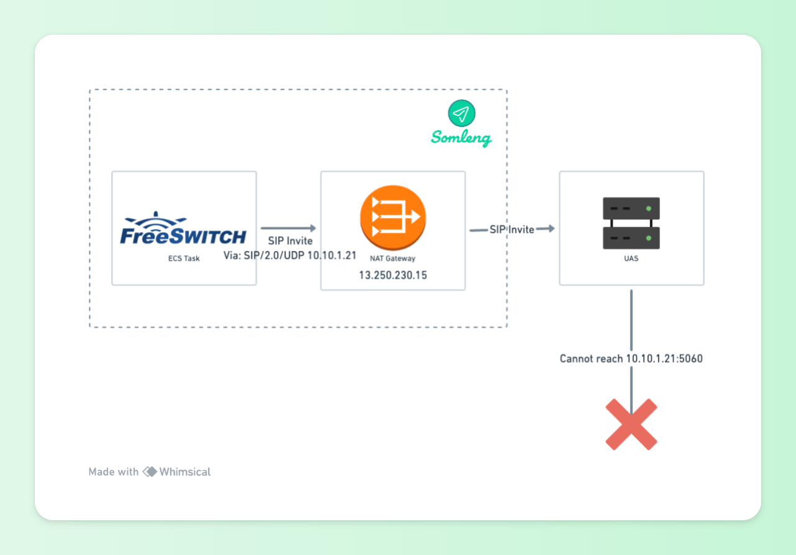 Figure 3: UAC Behind NAT GatewayTo handle this situation Section 18.2.1 of RFC 3261 describes how a server must add a "received" parameter to the topmost Via header when it receives a request:
This parameter MUST contain the source address from which the packet was received.
This parameter was designed to assist routing of responses not only where NAT is involved but also where the upstream device has used a hostname rather than an IP address in the Via it inserted. The default behavior for routing of SIP responses over UDP, as described in RFC 3261, is to use address and port information embedded in the relevant Via header - the address is taken from the "received" parameter value and the port is taken from the "sent-by" component. If there is no port, it defaults to port 5060 for UDP and TCP, or port 5061 for TLS.
Here's how the Via Header looks when the "received" parameter is added by the UAS:
Via: SIP/2.0/UDP 10.10.1.21;received=13.250.230.15;branch=z9hG4bKv5jFZ8am7aZQcThe UAS has added the "received" parameter which correctly corresponds to the public IP of the NAT gateway. However this alone is not enough. Responses from the UAS will still be sent to the port 5060 (default for UDP). Since this port is not mapped by the NAT gateway, responses cannot be received by the UAS.
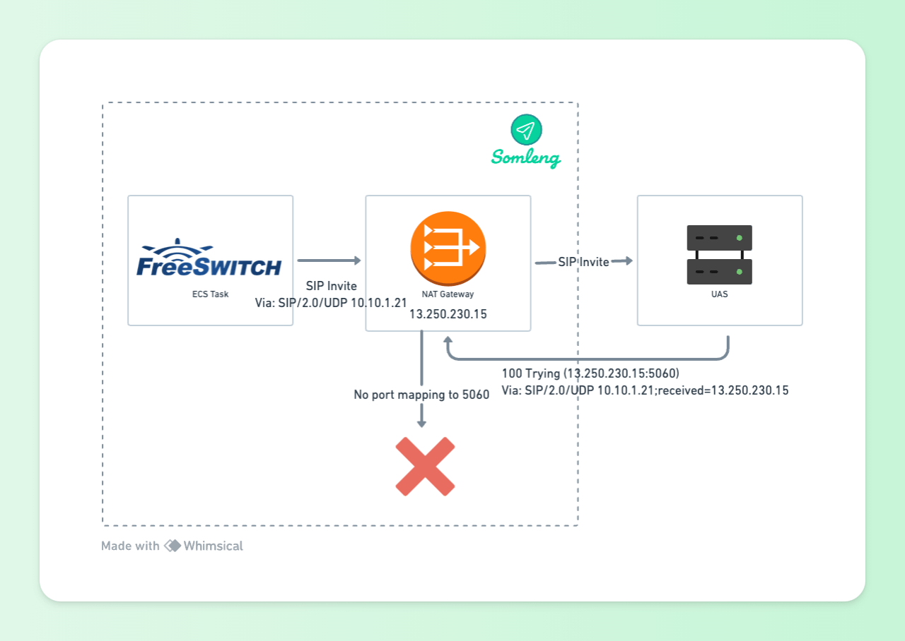 Figure 4: UAC Behind NAT Gateway with "received" parameterThis problem was addressed in RFC 3581 It describes the "rport" parameter as follows:
When a server compliant to this specification (which can be a proxy or UAS) receives a request, it examines the topmost Via header field value. If this Via header field value contains an "rport" parameter with no value, it MUST set the value of the parameter to the source port of the request. This is analogous to the way in which a server will insert the "received" parameter into the topmost Via header field value. In fact, the server MUST insert a "received" parameter containing the source IP address that the request came from, even if it is identical to the value of the "sent-by" component.
Fortunately FreeSWITCH automatically adds this empty "rport" parameter to the via parameter when it detects it's behind a NAT. Here's how the Via header looks with the empty "rport" parameter when sent via the UAC (FreeSWITCH):
Via: SIP/2.0/UDP 10.10.1.21;rport;branch=z9hG4bKv5jFZ8am7aZQcAnd here's how the Via header looks after it has been received by the UAS:
Via: SIP/2.0/UDP 10.10.1.21;received=13.250.230.15;rport=37058;branch=z9hG4bKv5jFZ8am7aZQcThe addition of an "rport" parameter alongside the "received" parameter means that SIP responses can be passed back to the source using symmetric routing. Responses will now be sent from the UAS to 13.250.230.15 on port 37058 which correspond to the IP address and port address mapping of the managed NAT Gateway. The NAT gateway will then map this port back to the FreeSWITCH task which is running on 10.10.1.21.
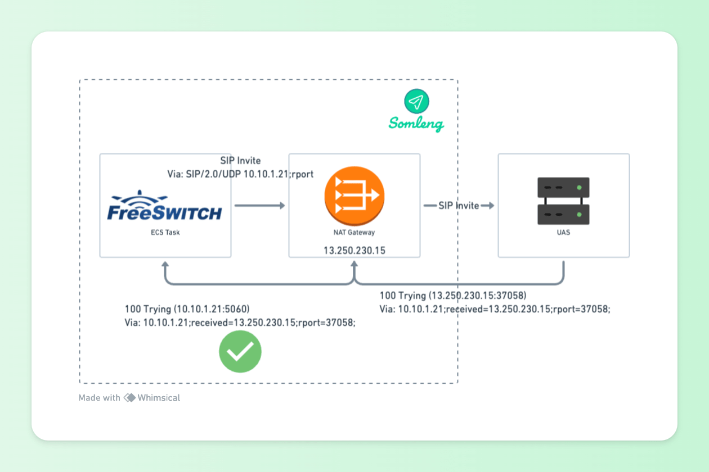 Figure 5: UAC Behind NAT Gateway with "received" and "rport" parametersUnfortunately this is not the end of the story. Inside a SIP Invite request body there's a SDP packet which describes multimedia communication information. Here's an truncated example from Somleng:
Session Description Protocol Version (v): 0
Connection Information (c): IN IP4 13.250.230.15
Media Description, name and address (m): audio 25984 RTP/AVP 0 8 101 13
The following line shows the media connection information:
Connection Information (c): IN IP4 13.250.230.15
The connection information part correctly uses the IP address of the NAT Gateway. This is because in
our FreeSWITCH configuration
we set the
ext-rtp-ip
parameter to the IP address of the NAT Gateway which causes
FreeSWITCH to insert the correct value. Without this configuration FreeSWITCH would insert the
private
IP address of the ECS task's network interface into the SDP. However there's also an issue with the
following line:
Media Description, name and address (m): audio 25984 RTP/AVP 0 8 101 13This line specifies the port in which the media should be sent and received from. FreeSWITCH opens this port (25984) for sending media and inserts it into the SDP. By default FreeSWITCH will select a random port in the range 16384-32768.
However when RTP media is sent out through the NAT gateway to the UAS, the port will be translated and will no longer match the value in the SDP. This typically results in one-way audio issues because the media server on the UAS side will try to send audio back to the port specified in the SDP which cannot be reached as illustrated below:
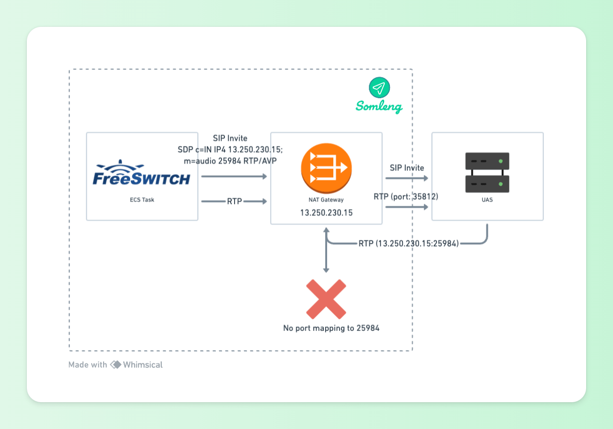 Figure 6: UAC Behind NAT Gateway SDP and RTPIn order to work around this issue, we typically require UAS/Media Servers connecting to Somleng to enable Symmetric RTP. Symmetric RTP means that the IP address and port pair used by an outbound RTP flow is reused for the inbound flow. The IP address and port are learned when the initial RTP flow is received on the UAS. The flow's source address and port are latched onto and used as the destination for the RTP sourced by the UAC. The IP address and port in the c line and m line respectively in the SDP message are ignored. This is illustrated below:
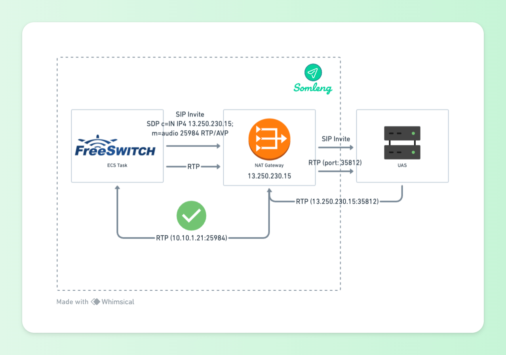 Figure 7: UAC Behind NAT Gateway Symmetric RTPIn some cases, our customer's devices do not support symmetric RTP, or they cannot enable it. In these cases, we work around the issue by bypassing the Managed NAT Gateway and routing RTP through a 1-1 NAT instance.
The 1-1 NAT instance does not automatically apply PAT to outgoing packets. Instead, it will try to keep the outbound port of the client and only apply PAT if there is a conflicting port. Given that FreeSWITCH generates a random port for RTP for each session in the range 16384-32768 it should be relatively rare to see conflicts and PAT.
Routing RTP through the 1-1 NAT instance means that the UAS will receive RTP packets from the port which corresponds to the value in the (m) line of the SDP. The UAS media server can therefore send RTP back to this port which will be routed back to the FreeSWITCH media server as illustrated below:
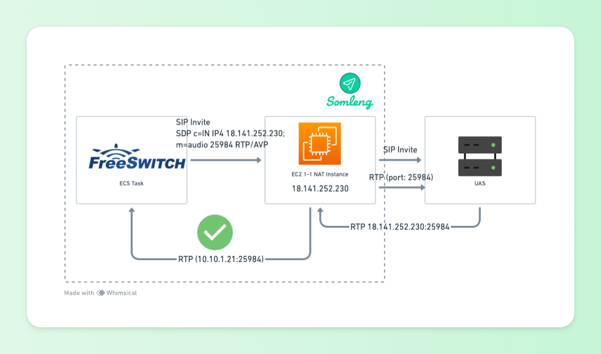 Figure 8: UAC Behind 1-1 NAT InstanceSo far we have managed to get away with using off-the-shelf managed services such as an AWS Application Load Balancer and an AWS NAT Gateway to horizontally scale FreeSWITCH when used as a User Agent Client (UAC). But we also want to use FreeSWITCH as a User Agent Server (UAS) to handle inbound calls. This poses a new set of challenges described in the following section.
Incoming SIP and RTP are sent over UDP. We want these requests to be load balanced to our FreeSWITCH tasks, but we cannot use the existing Application Load Balancer which operates on layer 7 (or the application layer of the OSI Model). AWS also has a managed layer 4 Network Load Balancer which can be used to load balance UDP, however this type of load balancer is not SIP aware. Here's what happens when we try to load balance SIP directly to the FreeSWITCH tasks using a managed Network Load Balancer.
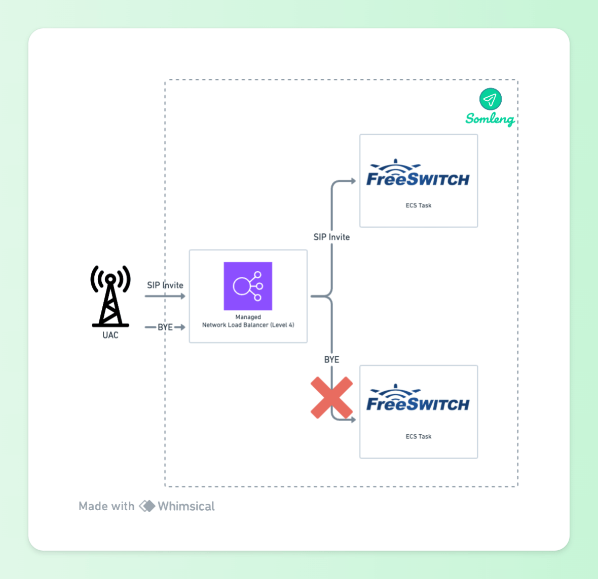 Figure 9: UAS Behind Network Load BalancerThe non-SIP-aware Network Load Balancer, just distributes requests between the ECS tasks running FreeSWITCH. In the example above the SIP Invite is sent to one ECS task, but the SIP BYE is sent to another.
In order to handle this we need a SIP-aware proxy that sits between the managed Network Load Balancer and the FreeSWITCH UAS tasks. The proxy will be able to handle incoming requests and route them to the correct FreeSWITCH task. For this we use OpenSIPS. OpenSIPS comes with a load balancer module which supports FreeSWITCH out of the box.
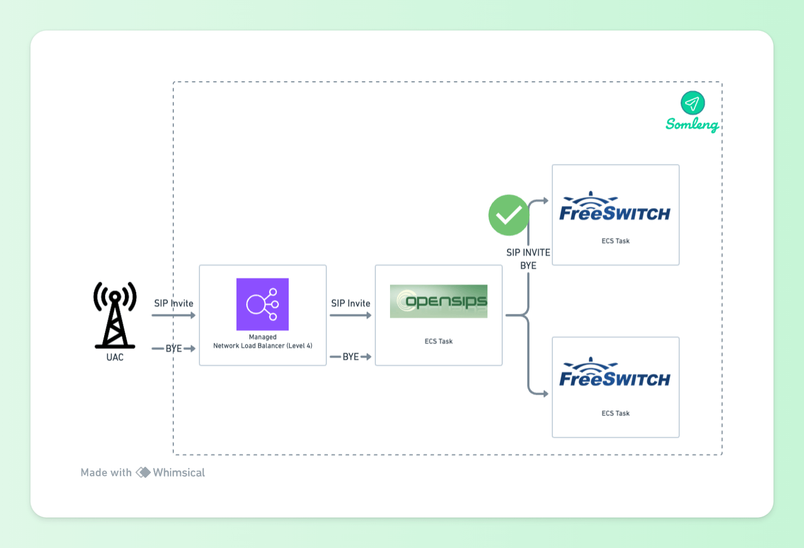 Figure 10: UAS Behind OpenSIPS ProxyWith an OpenSIPS proxy in place, new requests (SIP Invites) will be load balanced across the available FreeSWITCH tasks. In order to illustrate this better let's look at a complete example.
Figure 11: SIP Invite10.65.104.1) sends SIP Invite to the UAC's SIP Proxy
(175.100.32.29)
52.74.4.205)
10.10.1.162)
10.10.1.21)
When the SIP invite arrives at the OpenSIPS proxy it will add a new Record-Route header containing its own address above any existing Record-Route headers. In our setup, OpenSIPS is configured to add two Record-Route headers. This is known as double Record-Route headers and handles the special situation where the proxy receives a request on one network interface and sends it onwards using a different interface. In our case the request is received on by Network Load Balancer but sent out via the private IP address of the OpenSIPS ECS Task.
The set of Record-Route headers describes the path through all proxy nodes. Combined with the Contact header, this provides a complete description of the upstream path that leads back to the UAC.
Here's an example of a request containing the Record-Route headers and contact headers for a SIP Invite proxied to the UAS (FreeSWITCH ECS Task):
Request-Line: INVITE sip:1294@52.74.4.205:5060;user=phone SIP/2.0
Message Header:
Record-Route: <sip:10.10.1.162:5060;lr;did=05d.f7db99b7;r2=on>
Record-Route: <sip:52.74.4.205:5060;lr;did=05d.f7db99b7;r2=on>
Record-Route: <sip:175.100.32.29:5060;lr;transport=udp>
Contact: <sip:0715100860@10.65.104.1:5060;user=phone>Note the following:
10.10.1.162 is the internal IP address of the OpenSIPS ECS task. This Record-Route
header
is added by
the OpenSIPS proxy before it sends the request to the UAS.
52.74.4.205 is the public IP address of the Network Load Balancer. This Record-Route
header is added by the OpenSIPS proxy before it sends the request to the UAS.
r2=on in the Record-Route headers indicates double Record-Route
headers.
175.100.32.29 is the public IP address of the SIP proxy associated with the UAC and
is
added by the UAC's proxy.
10.65.104.1 (in the contact header) is the internal IP address of the UAC.
Now the UAS (FreeSWITCH ECS task) has a complete description of the path back to the UAC, but at this point the UAC doesn't have any knowledge of the path, the proxy nodes or even the address of the UAS. It needs to know the path too, for example when it wants to send more requests to the UAS within the current dialogue. This information is exchanged by the UAS in the response, which includes a complete copy of all the Record-Route headers. It also includes its own Contact header in the response. The path that the response follows is defined by the Via headers - the Record-Route headers are present in the response but do not influence its transmission path.
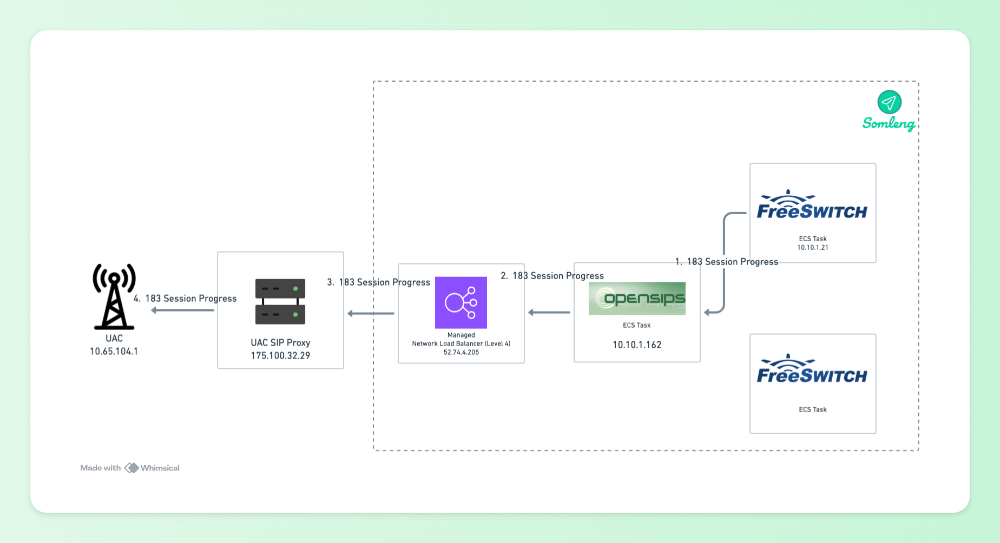 Figure 12: SIP Response10.10.1.21) sends the response to the OpenSIPS proxy's
internal IP address (10.10.1.162) obtained from the received parameter in the Via
Header.
175.100.32.29)
obtained from the Via Header.
10.65.104.1) obtained from the
Via
Header.
Here's the SIP response from the UAS:
Status-Line: SIP/2.0 183 Session Progress
Message Header:
Via: SIP/2.0/UDP 52.74.4.205:5060;branch=z9hG4bK918f.3a1eef55.0;received=10.10.1.162
Via: SIP/2.0/UDP 175.100.32.29:5060;branch=z9hG4bK08B4d2dd80314813a74
Via: SIP/2.0/UDP 10.65.104.1:5065;branch=z9hG4bKqgyjqqdfz0g5zqhhysze7m0de;X-DptMsg=139
Record-Route: <sip:10.10.1.162:5060;lr;did=05d.f7db99b7;r2=on>
Record-Route: <sip:52.74.4.205:5060;lr;did=05d.f7db99b7;r2=on>
Record-Route: <sip:175.100.32.29:5060;lr;transport=udp>
Contact: <sip:1294@10.10.1.21:5060;transport=udp>Note the following:
10.10.1.162 is the internal IP address of the OpenSIPS ECS task seen in the
"received"
parameter of the first
Via Header. This "received" parameter is used to determine the first hop back to the the OpenSIPS
Proxy in the
response, not the Record-Route header.
10.10.1.21 (in the contact header) is the internal IP address of the UAS (FreeSWITCH
ECS
Task). This is set by the UAS in the response.
So now, both the UAC and the UAS have a copy of the full set of Record-Route headers and is remembered by both endpoints. Once the dialogue is established, the proxies should not insert any more Record-Route headers after that initial transaction. Instead, all the sequential SIP requests should contain Route headers.
The Route Set is used to create a set of Route headers. The sequence of these headers is important - the upstream server will invert the order, but a downstream server does not.
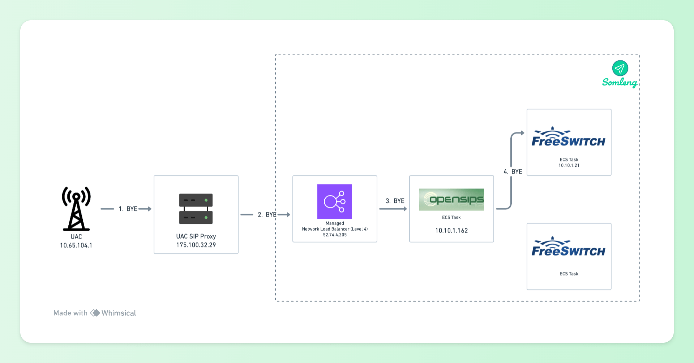 Figure 13: Downstream SIP Bye175.100.32.29).
52.74.4.205).
10.10.1.162).
52.74.4.205 and
10.10.1.162) and forwards the request
to UAS obtained from the value in the Request-Line (10.10.1.21).
Here's the downstream BYE request from the UAC.
Request-Line: BYE sip:1294@10.10.1.21:5060;transport=udp SIP/2.0
Message Header:
Route: <sip:175.100.32.29:5060;lr;did=7c1.f350d215;>
Route: <sip:52.74.4.205:5060;lr;did=7c1.f350d215;r2=on>
Route: <sip:10.10.1.162:5060;lr;did=7c1.f350d215;r2=on>Note the following:
10.10.1.21)
which it got from the Contact Header of the Response (see above).
So far we have discussed how we deploy FreeSWITCH behind both an Application Load Balancer (when acting as a UAC) and a SIP proxy (when acting as a UAS). This section discusses how we automatically scale FreeSWITCH tasks based on CPU and Session count.
We use two separate Target Tracking scaling policies which track both the CPU usage and session count of the FreeSWITCH tasks.
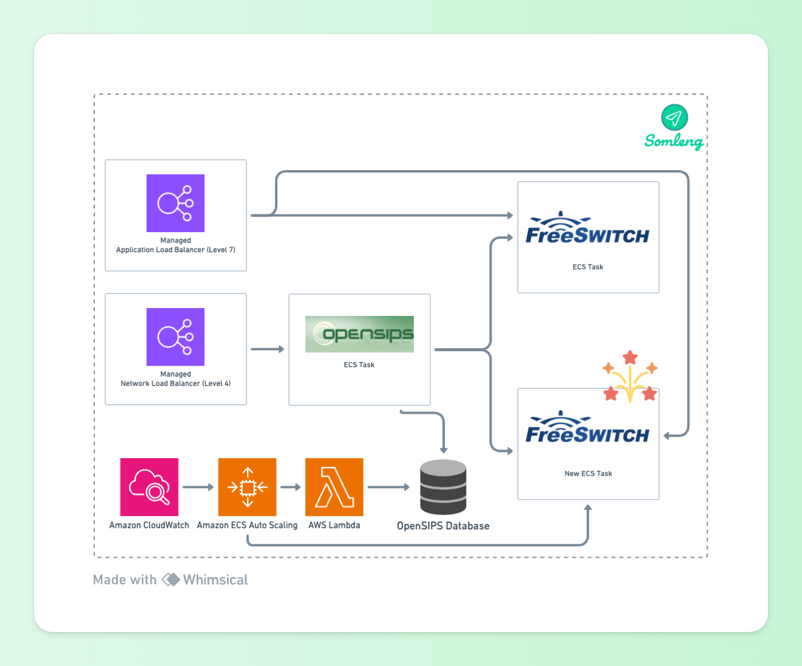 Figure 14: ECS AutoscalingWhen a scaling policy adds a new task, a Lambda function is triggered which adds a load balancer target to the OpenSIPS load balancer table. OpenSIPS will then start load balancing SIP requests to the new task. When FreeSWITCH is acting as a UAC, this happens automatically when ECS registers the task with the Application Load Balancer.
Similarly, when a task scales-in the Lambda function is triggered which removes the load balancer target from the OpenSIPS load balancer table. OpenSIPS then stops sending new requests to this endpoint. When FreeSWITCH is acting as a UAC, this happens automatically when ECS de-registers the task from the Application Load Balancer. After a specified timeout period, the task is terminated.
All of the Infrastructure described in this post is available as Terraform configuration files as part of our commitment to being 100% Open Source and a Digital Public Good. The configuration files can be found under the infrastructure directory in the following repositories:
In August 2023 my wife Mara and I traveled to Pakse in Southern Laos to help setup an Early Warning System pilot for one our customers People In Need. The Early Warning System is targeting three provinces of Southern Laos: Salavan, Champasak and Attapeu.
This blog post covers the journey to Laos and the setup of the Early Warning System through Somleng. If your only interested in the tech part, feel free to skip to Day 4.
My wife and I live on a small farm just south of Phnom Penh in Cambodia. There are flights from Phnom Penh to Vientiane (Capital of Laos), but Pakse is still around 670 km from Vientiane and the only way to get there is by bus. On the other hand Pakse is only around 600 km from Phnom Penh. There's a bus from Phnom Penh to Pakse but it takes between 13 and 15 hours which didn't sound fun. So we decided to put our stuff in a big black plastic bag, tie it to the back of my 1993 Honda Degree and hit the road.
We left home around 7:00am and headed north, crossing Kandal, Prey Veng, Kampong Cham and Kratie provinces and finally reaching Stung Treng around 3:00pm.

The Cambodian-Laos border is around 70 km from Stung Treng city but the road is unpaved from the Sekong bridge just outside of Stung Treng city all the way to the border. At the border on the Cambodian side there is nothing much except for a few shops where you can change Cambodian Riel (or presumably US Dollars) into Lao Kip. We actually did this at a money changer in Stung Treng before we left. Note that you will need some Lao Kip before entering Laos. There are no ATMs or money changers on the Laos side of the border, and nobody in Laos will accept Cambodian Riel or any other currency for that matter.
If your crossing with a motorbike you'll have to go though both immigration and customs on the Cambodian side. The immigration official asked us for 10,000 Riel ($2.50) per passport after stamping us out. I'm sure this is a non-official payment since I've never been asked to pay when leaving Cambodia in the past. However I've lived in South East Asia for 15 years, (Cambodia for 11 of those) and I understand that immigration officials don't get paid enough to raise their families on the official salary, so I don't really have a problem helping them out.
After you stamp out of Cambodia, you'll have to go to the customs office, where the official will check the paperwork for your motorbike. The important document that you need is the ownership paper for the Motorbike. In Cambodia this is known as the vehicle identification card or (កាតគ្រី). Note that it doesn't matter if this document has the previous owner's name, but you must posses the actual card.
If you don't have the paperwork for the motorcycle, the customs official may still be able to process the export documents, but you may have to pay between $10 and $20. Again, I think this is reasonable, especially if you don't have the required documents. If you stand there and argue, they are within their rights not to let you cross with the motorbike.
Fortunately for us, when we entered customs office, the customs official instantly recognized my wife and I. He went to high school with my wife and her brother and I had met him once before in Phnom Penh. Needless to say, he helped fill out the export documents for us, and we were soon on our way to the Laos side.
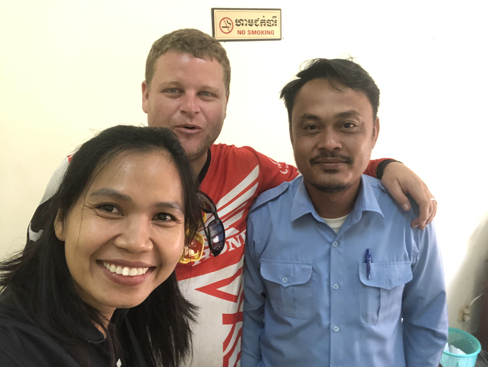There's a tiny office on the Laos side of the border before you get to the main immigration section. Apparently this is so called vehicle immigration where the Laos official will stamp your export paper from the Cambodian side. We had to pay 10,000 Riel (or $2.50) for this stamp. However this is not the document that are required to enter Laos with your motorbike. This is basically just a stamp for the customs official in Laos to see that the export paper from Cambodia has been stamped on the Laos side.
Once we got to immigration on the Laos side, the immigration official, told us that we could not enter Laos with our motorbike and if we still wanted to purchase a Laos visa. At this point we were confused because we assumed that the stamp from the so called "vehicle immigration" was enough. At this point the immigration officer asked us to go to speak to customs for further clarification.
The Lao customs official could not (or refused) to speak English with us. However, a local Lao guide who was at the border with another tour group, helped translate for us. According to the Lao customs official there's a new rule that only organized motorbike tours are allowed to enter Laos with a motorbike. The tours must have a local Lao guide and official paperwork. The Lao customs official didn't even try to ask us for money to get around the problem, he just flat out refused to let us enter with the motorbike.
We decided to contact Mara's high school friend (the customs official on the Cambodian side) to see if he could help us on the Laos side. He came over to the Laos side and was also surprised about this new rule. He had been issuing paperwork on the Cambodian side but never had this problem before. He spoke with the Lao customs official, but he still didn't allow us to enter. So we prepared to take our motorbike back to the Cambodian side, leave it at the border and take a bus to Pakse.
In the meantime, our Cambodian customs official friend was speaking with boss of the Lao customs official, and finally he came to us and said they would make an exception this time. If it wasn't for our friend on the Cambodian side there was no chance of us getting the motorbike into Laos, even with the correct paperwork.
The Lao customs official charged us 50,000 Riel ($12.50) for the motorbike papers to enter Laos (I'm pretty sure this is more than the official amount) but we were happy to pay anyway. A Laos Tourist Visa also costs $40.
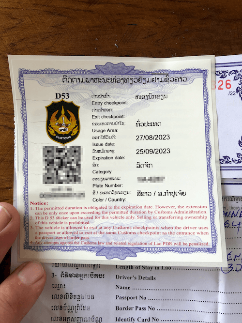There is literally nothing on the Laos side of the border. No shops. No ATMs. No money changers. Just a road (with not much traffic). That's why if you are traveling by motorbike it is important to have some Lao Kip before you cross in case you need to stop to buy water or petrol or something.
After entering Laos, we put asked Google maps to give us directions to Don Det (part of the 4,000 islands) where we planned on staying the night. I don't really trust Google Maps in Cambodia and have been burnt a few times, so I double checked to see if the route seemed reasonable. I could see a bridge over the Mekong to Don Khong, a ferry to Don Som, and finally another ferry to Don Det. This sounded reasonable (and fun!) so we headed for our first stop Don Khong.
After crossing the bridge onto Don Khong, there's a short road to the ferry crossing. It costs 20,000 Lao Kip (approx $1) to cross over to Don Som.
The Don Som Road is difficult but beautiful. Basically it's just a narrow path through the rice fields. Along the way I had some issues with my chain coming off, but we eventually found a small shop selling drinks and doubling as a mechanic who helped fix it.
Don Det and Don Khon are connected by a bridge. Both islands are way more touristy than Don Som and all the roads are paved. We visited the Liphi Somphamit Waterfalls and the Old French Port and enjoyed a few beers before finding a place to stay on Don Khon.
We left Don Det on the ferry to Nakasong which takes around 20 minutes. That's when we realized that actually Google Maps told us to go wrong way on the previous day. From Nakasong you just take the main highway 13 all the way to Pakse. Nakasong is basically the gateway to Don Det and the 4,000 islands.
Along the way we got burnt by Google Maps again while trying to find a waterfall in the Bolaven Plateau. After riding on a dirt track for a few kilometers I had issues with my chain again. We found a rubber plantation and one of the workers helped me fix the chain until we could find a proper mechanic. We decided to give up on the waterfall and head for Pakse.
This is the technical part of the post so feel free to skip it if your not interested!
In order to have a better understanding about how we setup the Early Warning System in Laos, it's useful to understand how it works in Cambodia. Somleng is already powering the National Early Warning System of Cambodia in collaboration with the People In Need. In this system, Somleng is connected to each of the main Mobile Network Operators as shown Figure 1 and Figure 2 below.
Beneficiaries register to the Early Warning System by calling to 1294 and following the IVR prompts.
In case of an emergency such as a flood or other natural disaster, beneficiaries are notified via a recorded message delivered to their mobile phone.
In order to power a pilot Early Warning System in Laos without the administrative red tape required to connect to the local mobile network operators, we use Somleng's Client Gateway feature to deliver the service while bypassing the mobile network operators. Figures 3 and 4 below show how it works.
Beneficiaries register to the Early Warning System by calling to advertised local numbers inserted in the VoIP Gateway.
In case of an emergency such as a flood or other natural disaster, beneficiaries are notified via a recorded message delivered to their mobile phone.
As you can see both the registration flow and broadcast flow for the Laos system is almost identical as the Cambodian system. The main point of difference being that we're replacing the mobile network operators with an off-the-shelf VoIP Gateway.
There are of course some limitations of this setup such as:
On the other hand, the benefit of this system, is that it can be built entirely with open source software and off-the-shelf hardware.
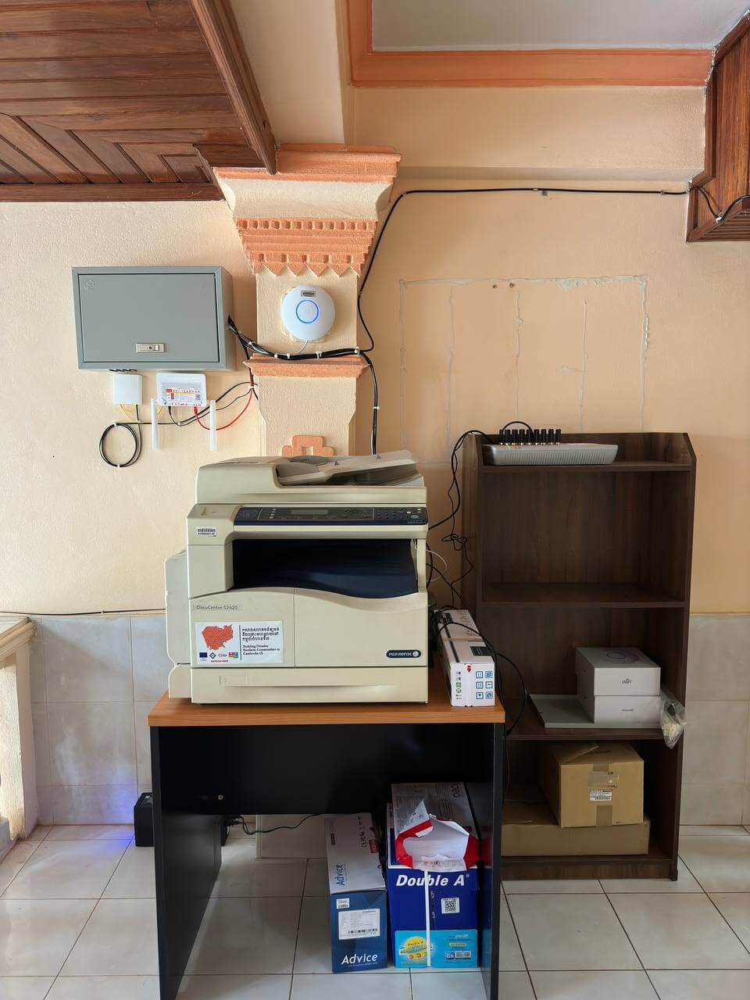The rest of this blog post covers our journey back to Cambodia via the scenic route. 🤣
We left Pakse with the intention of making it back to Stung Treng, however we saw a sign Wat Phou around 30 km south of Pakse, so we decided to turn off and take a look. We arrived at a small village where the ferry terminal is, but we accidentally took the wrong road down to the river bank. There was a young lady with a small wooden boat who gestured that she would take us across the Mekong river to Champasak town. Mara wasn't sure about the safety of the boat as you'll see in the videos below. 😂
After making it safely across the river we rode south along the western side of the Mekong to Wat Phou (ວັດພູ). Entrance is only 100,000 Lao Kip (approx $5) per person and it's well worth it as the temple is magnificent.
After leaving Wat Phou, we decided to stay on the western side of the Mekong and continue heading south. The plan was to find a ferry back to Don Khong and then cross back over the same bridge that we took on the road to Don Det. The road was pretty rough but the scenery was beautiful.
We eventually found a ferry crossing before we reached Don Khong and crossed back over to the eastern side of the Mekong to the main highway and headed for the border, arriving around 5.00pm.
Shortly after crossing into Cambodia it started to piss down with rain. Fortunately we ran into Mara's high school friend (who helped us with the Motorbike paperwork at the border on the way in). He convinced us not to try to ride to Stung Treng in the rain and dark and suggested that we have a couple of beers with him. So we did and ended up staying the night at his friend's house just near the border.
It rained pretty much all day, which made the journey a bit slow. We stopped in Kratie for lunch, before riding along the Mekong to Kampong Cham where we spent the night before heading home the next day.
We arrived home safe and sound. Hopefully we get the chance to visit Laos and it's beautiful people again in the near future!
In October 2022, we introduced DIY programmable voice, allowing customers to roll their own Twilio and make real calls through their VoIP gateways.
Today we're excited to announce official support for SMS.
With this new feature carriers can offer programmable SMS to their customers by configuring an SMS Gateway and connecting it to their existing SMS infrastructure.
Individuals and organizations can also use this feature by connecting their SMS gateway to a device that supports SMPP, such as a VoIP gateway or SIM Box .
After the connection is configured, customers can programmatically send and receive SMS through their SMS gateway using the REST API .
Visit our documentation for more information on how to configure programmable SMS on Somleng.
Note: Using SMS gateways is restricted in some countries. We recommend that you check your local laws and regulations before proceeding with this method.
At Somleng, one of our biggest customer bases are NGOs. One of the reasons that NGOs choose us is because we work with local carriers directly. This allows us to provide cloud communication services in new markets where it's otherwise unavailable, or with better quality, and a fraction of the cost of our competitors .
Although working with local carriers improves quality and reduces costs, one of the biggest pain points for our customers is actually engaging with and arriving at a commercial agreement with a local carrier. Often our customers want to get something up and running quickly to prove a concept or do a pilot, without engaging with their local carrier.
It turns out that it's actually possible to access the local public switched telephone network (PSTN) without a commercial agreement with a local carrier. All you need is a VoIP gateway and one or more SIM cards. A VoIP gateway has interfaces to both IP networks and the PSTN and handles the bridging between them. One interface can be connected to the Internet and the other to the PSTN, via SIM card(s) inserted into the VoIP gateway. VoIP gateways range in size 1 from to 128 channels or more. The more channels you have the more concurrent calls you can support.
Today we're excited to announce official support for VoIP gateways on Somleng.
With this new feature customers can sign up and connect their VoIP gateway to Somleng by configuring a client gateway connection .
After the connection is configured, customers can programmatically make outbound calls through your VoIP gateway using the REST API , and programmatically control both outbound and inbound calls via TwiML.
Note: Using VoIP gateways is restricted in some countries. We recommend that you check your local laws and regulations before proceeding with this method.
This new feature also opens up new business opportunities for individuals or organizations to provide access to the PSTN in their country via a VoIP gateway that they own or manage. We call this type of user a Network Provider , and like carriers, they can also create customer accounts on Somleng.
Any account that the Network Provider creates, is managed by them and has its own set of REST API credentials and account management interface. A network provider can therefore onboard their own customers, by creating them an account and providing them with PSTN access through their VoIP gateway(s).
This can be combined with our custom domains feature feature resulting in a fully custom-branded experience for your customer.
We don't yet have a way for a network provider to monetize this business flow directly on the Somleng platform, but it's something we will consider if enough users request this feature.
Currently our client gateway feature only supports Programmable Voice, but stay tuned because we're adding SMS support next!
Following on from our introductory blog post The Somleng Story in this post we'll do a deep dive into how local carriers can offer programmable voice to their customers via Somleng.
Programmable voice has a variety of different use-cases such as:
Twilio has become the de-facto go-to solution for programmable voice and profits exorbitantly as a result. But actually local carriers can offer much cheaper pricing and better quality since they are the custodians of the network.
By offering programmable voice as a solution, local carriers can share in the profits and obtain an advantage over their competitors all while protecting their own branding.
Somleng is an Open Source, white-labeled, Cloud Communications as a Service (CPaaS) solution. Unlike Twilio, which is a global centralized CPaaS designed for platform users directly, Somleng is designed for carriers and network operators.
Instead of platform users signing up directly on Somleng, Carriers instead sign up for a Somleng carrier account and manage their own customer accounts.
With the release of our new custom domains feature, a carrier can now configure their own custom domain and branding, providing a fully branded CPaaS solution their platform customers.
Carriers can then invite their customers to their branded dashboard via their custom domain where the customer can manage their own account and API credentials. The customer can then use Somleng's REST API for programmable voice.
Public sign ups are currently available for carriers only. If you work for a carrier and are interested in trying things out please read through our carrier documentation , where you'll find link to sign up for a trial account.

For a while now, Twilio has become the king of cloud communications. Although there has been a few clones pop up over the years, e.g. Vonage, Message Bird, etc. the space has remained relatively same same. Until now...
Somleng has the ambitious goal of revolutionizing the cloud communications space turning it on its head. We aim to take the power of cloud communications away from Big Tech's monopoly and bring it to the people. But to understand where we're going and why, it's important to understand where we've come from.

Starting back in 2012 Somleng's predecessor was a SMS and Voice powered dating service called Chibi. Launching in Cambodia, before the Smartphones and Facebook were ever really a thing (in Cambodia at least) subscribers would dial into a short-code and be randomly connected to another subscriber. Basically a chat roulette that worked over an ordinary voice call.
Subscribers could also send text messages to their new 'friend' by simply texting to the short code. Chibi would scan the messages, and build up a basic profile of the subscriber, trying to determine their age, gender and location.
The service was surprisingly popular, at its peak having more than 120,000 subscribers. But by 2015, smartphones and Facebook had taken over in Cambodia and Chibi eventually died.

Around 2016, the Royal Cambodian Government in partnership with the NGO People In Need, were looking for a solution for the National Early Warning System .
The requirements were simple. In case of a natural disaster (such as a flood), a government official could record a voice message and deliver it via phone call to citizens in the affected areas.
Programmable voice is a perfect solution to this problem. Voice messages are recorded in Khmer, so it doesn't require the beneficiary be literate, have a smart phone nor have access to the Internet. They just pick up the phone and listen to the information recorded by the government official.
Our experience with building scalable communications platform to power Chibi meant that the timing was perfect for a pivot and Somleng was born.
Today Somleng is still powering Cambodia's Early Warning System.

In 2016 Somleng was among the first five companies to receive investment from the UNICEF Innovation Fund, in order to scale Somleng to support other use-cases.
Since then the UNICEF Innovation Fund been Somleng's main investor which has enabled us to grow far beyond Cambodia. Somleng is now powering cloud communications solutions across the world impacting over 250K beneficiaries across 11 different countries.
Somleng was also recently made a Digital Public Good recognition that Somleng is a product that helps to create a more equitable world.

There's a growing consensus that the Internet is too centralized controlled by too few players. It's no different in the cloud communications space. Big Tech controls most of the space and there are few options for individuals, small and medium sized companies, governments and NGOs.
Somleng's vision is a world where communications are accessible to everyone. In order to achieve this vision we need to think outside the box and provide a solution benefits everyone, not just Big Tech.

The first step for Somleng, is to level the playing field for local carriers (for clarification a local carrier is a local telecom company, mobile network operator or aggregator).
Twilio's et al. business model is based on a centralized Cloud Communications Platform as a Service (CPaaS). They charge an expensive premium (especially in emerging markets), to basically act as a middle-man between the platform user and the beneficiary.
But what if a local carrier, who controls the network connectivity in their region or country, could be their own Twilio? They could provide a similar service to Twilio at a fraction of the cost by cutting them out of the flow.
In addition to the reduced costs for the platform user, the local carrier can protect their own branding and generate additional revenue streams.
Somleng now supports custom domains allowing carriers to leverage Somleng's API and Dashboard, while keeping their own branding. Alternatively, since Somleng is 100% open source, local carriers can always host Somleng on their own servers.

While supporting local carriers is a good first step, there's still a level of centralization at the local carrier level. In other words, Somleng now provides a solution to dissipate the monopoly of cloud communications from Big Tech to local carriers, but we can still go a step further to bring the power to individuals and organizations directly.
One of the features we'll be working on in the coming months is called "Be your own carrier". The idea is that any individual, business or organization can use Somleng to become a Network Provider, and provide the connectivity layer required for cloud communications, and in a future iteration, even be able to earn money from it.
The idea is quite simple. Using readily available, off-the-shelf hardware such as a GSM Gateway or GSM Modem, a network provider can provide connectivity to their local mobile network and register their route with Somleng. Somleng will then route calls and SMS to/from the network provider to provide programmable voice and SMS to the platform user.
A simple use-case for this is handling phone number verification via programmable voice. In order do achieve this now, you need to use a service like Twilio or Firebase. However with Somleng's "Be your own carrier" feature the application owner can register as a Network Provider, and their application can initiate a call via Somleng's REST API. The call is then routed via the network provider's hardware to the beneficiary's phone.
Now that any individual or organization can be their own carrier by becoming a network provider, the foundations are in place for a global marketplace of network providers and local carriers.
The final step in Somleng's CPaaS revolution is to leverage the global network of local carriers and network providers to provide a more equitable CPaaS economy. Local operators and network providers can make their routes publicly available and set their own prices and be compensated for every interaction that goes through their route. In theory this should create competition for who can offer the cheapest, highest quality routes.
We're excited about the journey that we're on and proud to be doing things differently. A special thanks to the UNICEF Innovation Fund team who have supported us from the beginning.